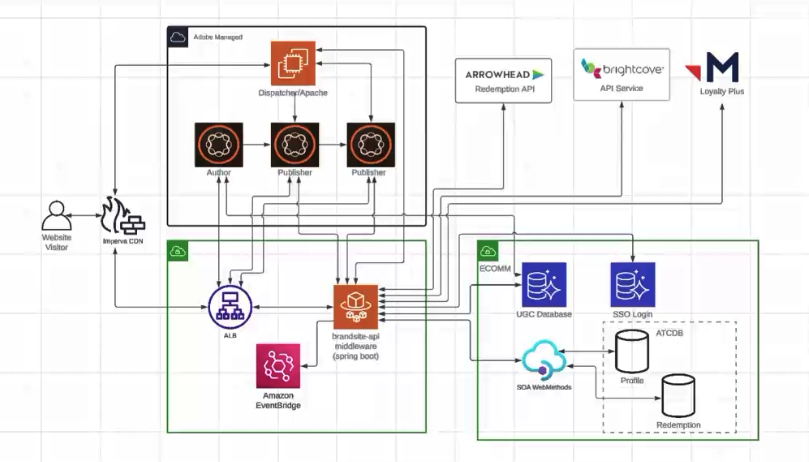
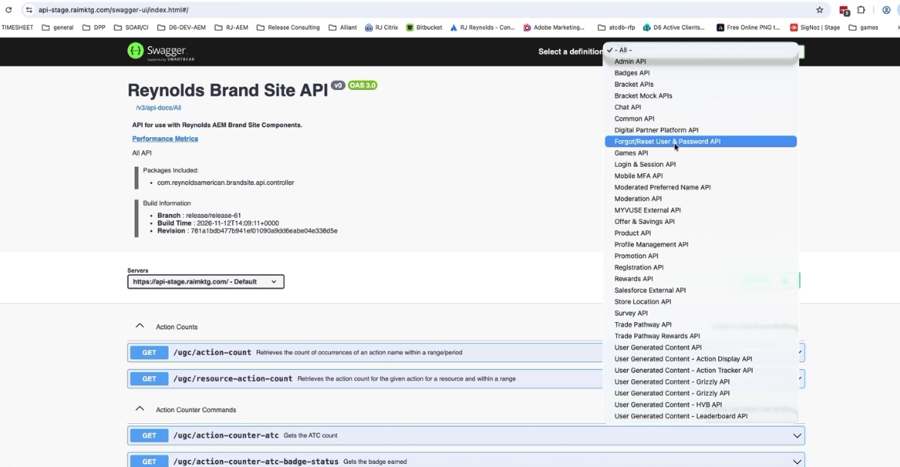

Newport Pleasure — newport-pleasure.com → EDS
Handoff Playbook for the development team · Source: RJRT technical deep-dive, 13 Nov 2026 Repo set up · EDS rebuild in progress
Overview
Newport Pleasure is a Reynolds American (RJRT) brand website. Unlike simpler content-led RJRT corporate/brand sites, Newport is the complex case: authenticated experiences, age-verified registration, loyalty rewards, coupons, user-generated content (UGC), games and Adobe Target personalization, all backed by a Java middleware tier.
This document hands over the requirements to the development team building the site on Adobe Edge Delivery Services (EDS). It combines the project set-up with the use cases and architecture walked through with the customer in the technical deep-dive meeting "PBYB – EDS program with Reynolds".
Access & security
- Browsers, scripts, crawlers and headless tools must run from a whitelisted static IP, otherwise requests are blocked by Imperva bot protection.
- Staging access details were shared with Adobe out-of-band. They are intentionally not recorded in this document — request them from the Adobe project lead (Atul Jadhav).
- Any additional developer needs their static IP submitted to the Reynolds team (Brad) and whitelisted before hands-on work starts. Confirm the full engineering roster first.
- Do not scrape or automate against production from non-whitelisted networks; use authorized access paths only.
- Production registration requires a real, eligible US identity that passes age verification. RJRT does not share production credentials; each engineer needing production testing creates their own verified account.
Key references
| Item | Value |
|---|---|
| Website | Newport Pleasure |
| Production URL | newport-pleasure.com (secured; IP whitelisted) |
| EDS preview | main--newport-pleasure--adobedrago.aem.page |
| Status | Repo set up, EDS rebuild in progress |
| GitHub | AdobeDrago/newport-pleasure |
| DA.live | da.live/#/adobedrago/newport-pleasure |
| Staging site | Shared with Adobe via IP whitelisting (details not recorded here) |
| Stage API / Swagger | https://api-stage.raimktg.com/swagger-ui/index.html — Dev, QA and Stage only; not in production |
| Architecture diagram | Screenshot below; Brad (RJRT) to share the full diagram, possibly with more detail |
Scope & approach
Rebuild in EDS
Page templates, content components, navigation, footer, and UI for registration, login, profile, rewards, coupons and games container.
Reuse as-is
Spring Boot middleware APIs, Loyalty Plus / Merkle, Veratad / DCAM age verification, SSO/session DB, SGW service.
Redesign, don't copy
UGC & moderation (come out of AEM), raw-HTML page debt, legacy SGW servlets.
Do not rebuild
Game engines (preserve the hosted iframe contract) and the transactional rewards ledger.
The meeting did not decide to rebuild Newport wholesale. The requested gate was an Adobe-led technical feasibility assessment, defining which component patterns move to EDS / AI-assisted implementation, which services are reused, which AEM dependencies remain, and which debt areas are redesigned.
Source architecture

| Layer | What it does |
|---|---|
| Imperva CDN | Front door: CDN, security, bot protection, IP whitelisting for lower environments. |
| Dispatcher / Apache | Serves largely cached HTML from AEM (Adobe Managed). Author → two Publishers behind it. |
| ALB | Load balancer routing traffic to the middleware. |
brandsite-api middleware | Java Spring Boot services on ECS Fargate. Orchestrates SOA/WebMethods, Loyalty Plus, databases and returns enriched responses. Most UI components talk to this, not to AEM publishers. |
| Amazon EventBridge | Event integration used by the middleware. |
| ECOMM zone | UGC Database, SSO Login DB, SOA WebMethods, ATCDB (Profile, Redemption). |
| External services | Arrowhead (redemption API), Brightcove (video API), Loyalty Plus (Merkle). |
| Remaining AEM servlets | B2B/content retrieval from JCR, authoring helpers, games config, page redirect, sitemap, Surgeon General Warning logic. |
API layer & Swagger

The middleware APIs are documented in Swagger and called from the front end through a JavaScript API library. Both authenticated and anonymous endpoints exist.
| API group | Used by |
|---|---|
| Registration, Login & Session, Mobile MFA, Forgot/Reset User & Password | Registration, sign-in, MFA, account recovery |
| Profile Management, Moderated Preferred Name | Profile |
| Rewards, Offer & Savings, Promotion, Product, Trade Pathway (Rewards) | Rewards catalog, coupons, offers, promotions |
| Games, Badges, Bracket / Bracket Mock, Chat | Games and engagement |
| User Generated Content (+ Action Display, Action Tracker, Grizzly, HVB, Leaderboard), Moderation, Survey | UGC, polls/surveys, leaderboards, moderation |
| Store Location, Salesforce External, MYVUSE External, Digital Partner Platform, Admin, Common | Store locator and integrations |
Dev action: build an endpoint inventory and map every EDS block/component to the APIs it consumes.
Environments
| Environment | Notes |
|---|---|
| Dev / QA | Swagger available; IP whitelisted; test-oriented registration/DCAM; MFA token shown on screen. |
| Stage | Very close to production content; reflects the upcoming release (about a 2-week cycle), so it may contain features not yet live. Swagger shows branch/build/revision — record the release under test. |
| Production | No Swagger. Real MFA delivery. Real age verification. No shared credentials. |
Raw HTML in AEM pages (more than a dozen usages believed) can make environments behave differently (e.g. CSS differences that don't show in QA).
Use-case index
| # | Use case | EDS approach | Complexity |
|---|---|---|---|
| 1 | Content pages & raw HTML | Rebuild as blocks; classify raw HTML | Medium |
| 2 | Registration & age verification | New UI, existing middleware + Veratad/DCAM | High |
| 3 | Login, session, SSO, MFA | Preserve session contract | High |
| 4 | User profile | Central profile state | Med-High |
| 5 | Rewards, catalog, offers, coupons | UI on existing APIs | High |
| 6 | UGC & moderation | Decouple from AEM | High |
| 7 | Games | Preserve iframe contract | Med-High |
| 8 | Surgeon General Warning | Use middleware SGW service | Medium |
| 9 | Target / AEP / Analytics | Parity of activities and tagging | Medium |
| 10 | Service-worker caching | Cache-equivalence strategy | Medium |
| 11 | Sitemap & secure-page inventory | Combine crawl, sitemap, authenticated nav | Low-Med |
UC1 · Content pages, raw HTML, sitemap
Content & page structure
- Current behaviour
- AEM pages cached by dispatcher. More than a dozen raw-HTML usages cause environment-specific styling/behaviour differences (a recent games issue was one example). A page-redirect servlet and a sitemap servlet exist in AEM.
- Requirements
- Inventory all raw HTML; classify as content, behaviour, integration or technical debt. Do not blindly migrate it.
- Do not use the sitemap alone as the page inventory: secured/authenticated pages were missing from it (RJRT to investigate). Combine crawl + sitemap + authenticated navigation + AEM content structure + template inventory.
- Replace redirect/sitemap servlets with EDS redirects and sitemap generation.
- Acceptance
- Complete page inventory including protected pages; visual parity to source per section.
UC2 · Registration & age verification
Registration
- Current behaviour
- Middleware Registration API; parts use form-data requests. Veratad / DCAM performs age verification. Lower environments include test-friendly DCAM behaviour. Production requires a real eligible US identity.
- Requirements
- Build the EDS registration UI against the existing Registration API; keep request formats identical.
- Exercise the full path: validation errors, age-verification failures, success.
- Test in lower environments; production needs developer-owned verified accounts.
- Acceptance
- New account can be created end-to-end on Stage via EDS; error paths match existing behaviour.
UC3 · Login, session, SSO & MFA
Authentication
- Current behaviour
- Session cookie holds a key (not the user's RJ identifier); middleware validates it against the SSO/session database.
secure.js/secureAuto.js-style client logic protects pages and supports automatic login. Session period discussed: 90 days.- Cross-brand SSO follows a risk continuum, so movement between brands is not symmetric.
- Authorization state also gates rewards access.
- MFA: production sends the code to the user; lower environments render the token on screen for testing.
- Requirements
- Preserve the middleware session contract, secure-route decisions and cross-brand rules.
- Write separate test cases for simulated (lower env) and real (production) MFA.
- Secure pages must be protected client-side as today (EDS pages are static/cached).
- Acceptance
- Login, auto-login, logout, MFA, protected-route redirect and cross-brand SSO behave as in current site.
UC4 · User profile
Profile
- Current behaviour
- Profile comes from middleware, is a relatively heavy call, is cached in the browser, and feeds rewards eligibility and personalization.
- Requirements
- Centralise profile retrieval and state in one shared module; components must not each call the profile API. Invalidate on logout and on profile update.
UC5 · Rewards catalog, offers & coupons
Loyalty Plus / Merkle
- Current behaviour
- Rewards run on Loyalty Plus / Merkle through middleware, with a catalog/service configuration per brand.
- Catalog items, details, points/ledger, earn/burn and denomination selection come from those services. UI depends on whether the user is enrolled.
- No duplicate points ledger in AEM. Presentation content, images, terms and disclosures can still be AEM-authored.
- Offers/coupons (e.g. birthday bonuses, poll-earned offers) are heavier calls and are cached; they depend on auth/profile context.
- Requirements
- Separate authored presentation content (EDS/DA) from transactional data (APIs).
- Treat rewards, catalog and offers as distinct surfaces; validate cache and invalidation.
- Cover the activity ledger, catalog item detail and reward denomination selection.
UC6 · UGC & moderation
User generated content
- Current behaviour
- UGC lives in a UGC database; a moderation tool reads it; polls/surveys and game leaderboards also use it. Historic slow queries and a problematic data model. RJRT (Chris) was explicit: UGC should come out of AEM and is a major pain point.
- Requirements
- Do not recreate AEM moderation inside EDS. Treat as a separate future-state decision.
- Validate that content written by new EDS components via the same backend still appears in existing moderation.
- Validate database/API performance.
UC7 · Games
Games
- Current behaviour
- Game UI is embedded via iframe with assets served from CloudFront; a separate config controls rendering (colours, sound, etc.); an AEM component places the iframe and AEM servlets handle authoring/config. Gameplay uses middleware APIs, leaderboards use the UGC DB, and play can award rewards points.
- Requirements
- Do not regenerate game engines. Build an EDS container block that preserves the iframe/config contract, and validate security, config and API integration. Decide where game config moves once the AEM servlet is gone.
UC8 · Surgeon General Warning (SGW)
Warnings
- Current behaviour
- Warnings vary by date/quarter, product/style and brand; assets are DAM images plus alt text/trigger text. A middleware service can return the correct warning dynamically; legacy servlet logic also exists.
- Requirements
- All new EDS warning components consume the existing SGW middleware service (as Brad recommended) rather than reimplementing servlet logic. Confirm where the warning images are hosted post-migration.
UC9 · Personalization & measurement
Adobe Target, AEP, Analytics, Launch
- Current behaviour
- Adobe Target runs location/profile-driven experiences, sweepstakes and coupons; Campaign, AEP and Analytics collect interactions; Adobe Launch is on the site. RJRT has already shared details of the Target activities.
- Requirements
- Inventory the Target activities and audiences; carry over Launch tagging; verify AEP/Analytics data for the prototype journeys.
UC10 · Service-worker & browser caching
Caching
- Current behaviour
- A service worker caches heavy calls (profile, offers) and some static resources. Cache config is per brand (URL patterns, HTTP methods) with lifecycle rules, e.g. login-state caches are flushed on logout.
- Requirements
- Define a cache-equivalence strategy. Functional success is not enough if it multiplies middleware traffic or serves stale auth/profile state.
Feasibility matrix
| Capability | Current implementation | Key POC question |
|---|---|---|
| Content/pages | AEM + dispatcher cached HTML | Can EDS reproduce patterns without carrying raw-HTML debt? |
| APIs | Spring Boot middleware + Swagger | Can EDS consume existing contracts directly and securely? |
| Registration | Middleware + Veratad/DCAM | Can age verification be retained unchanged behind an EDS UI? |
| Login/SSO/MFA | Middleware/session DB + secure JS | Can secure routes and cross-brand SSO be preserved? |
| Profile | Middleware, cached client-side | What shared state/cache avoids repeated heavy calls? |
| Rewards | Loyalty Plus/Merkle via middleware | Can EDS reuse transaction APIs while separating presentation content? |
| Coupons/offers | Middleware + cached offers | Are cache/invalidation and eligibility rules preserved? |
| UGC/moderation | UGC DB + moderation tool | What should be decoupled rather than migrated as-is? |
| Games | CloudFront iframe + config + APIs | Can EDS preserve hosted game integration? |
| SGW | Middleware service + DAM content | Can all warning components standardise on the service? |
| Target/AEP/Analytics | Adobe personalization/data stack | Can activities and measurement keep parity? |
| Sitemap | Sitemap servlet, incomplete secure coverage | What gives complete protected-page coverage? |
Risks & technical debt
| Risk | Impact | Mitigation |
|---|---|---|
| IP whitelisting / bot protection | Blocked tooling and developers | Submit static IPs early; use whitelisted machines only |
| Remaining AEM servlets | Hidden dependencies break EDS | Servlet dependency list: call existing service, move to middleware, or keep AEM temporarily |
| Stage ahead of production | Testing against unreleased behaviour | Record release/branch under test |
| UGC DB performance and model | Slow pages, moderation gaps | Separate future-state decision |
| Raw HTML differences | Env-specific CSS bugs | Inventory and classify |
| Incomplete sitemap | Missing secure pages | Multi-source inventory |
| Test vs production behaviour (MFA, DCAM) | False confidence | Separate test cases per environment |
Decisions & assumptions
- Next gate is a technical feasibility assessment — not an immediate full rebuild.
- Reuse existing middleware APIs; EDS is a front-end replacement.
- UGC/moderation is redesigned, not copied.
- Games stay as hosted iframe content.
- Prefer asynchronous targeted questions to a standing meeting; the customer declined a regular cadence until the assessment is done.
Next steps
Adobe / development team
- Confirm the engineering roster and send static IPs for whitelisting.
- Inventory endpoints, servlets, raw HTML, Target activities and pages (including secure pages).
- Map each Newport function to an EDS pattern; build the shared auth/profile/cache modules.
- Test registration, MFA, profile, rewards, coupons and session on Stage.
- Return a feasibility recommendation and POC scope to RJRT.
RJRT / Reynolds
- Brad to share the architecture diagram (with more detail if possible).
- Whitelist additional Adobe static IPs as supplied.
- Investigate the sitemap / secure-page discrepancy.
- Answer targeted technical questions as they arise.
Open questions
- Where will game configuration and SGW images live once AEM authoring is no longer the source?
- Which AEM servlets must remain, and for how long?
- How do EDS secure pages interoperate with
secureAuto.jsand the service worker? - What is the target for UGC/moderation outside AEM?
- Which Target activities must run in the prototype scope?
Glossary
| Term | Meaning |
|---|---|
| EDS | Adobe AEM Edge Delivery Services |
| DA.live | Document Authoring for EDS |
| Imperva | CDN / WAF / bot protection in front of RJRT sites |
| Middleware / brandsite-api | Spring Boot APIs on ECS Fargate |
| Loyalty Plus / Merkle | Rewards platform |
| Veratad / DCAM | Age-verification services |
| SGW | Surgeon General Warning |
| UGC | User-generated content |
| SSO | Single sign-on across brands |
Meeting screens
The meeting record exposes shared-screen identifiers rather than image files. Two were captured here (architecture and Swagger). Others can be located in the source recording:
| Topic | Shared screen IDs |
|---|---|
| Architecture / Imperva | 1–3, 9, 22 |
| Swagger / API detail | 4–7, 13 |
| Service worker / cache code | 8, 16, 18 |
| Moderation, servlets, code | 10–12, 15 |
| Stage login / registration / MFA / profile | 14, 17, 19, 20 |
| Rewards, coupons, ledger | 21, 23, 24, 26–28 |
| Representative Stage experience | 25 |